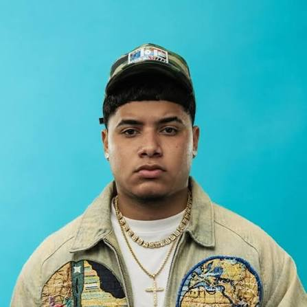

Anuel AA
Anuel AA es un cantante puertorriqueño relacionado principalmente con el reguetón y el trap latino. En el festival realizará uno de los conciertos principales.
Música, cultura y diversión al atardecer
18 y 19 de julio de 2027 - Las Palmas de Gran Canaria
El Gran Canaria Sunset Fest es un festival de música y actividades culturales que se celebra en Las Palmas de Gran Canaria.
Durante dos días los asistentes podrán disfrutar de diferentes conciertos, música electrónica y actividades culturales.
El objetivo del festival es ofrecer un espacio de ocio y cultura donde las personas puedan disfrutar de la música y pasar un buen rato.
Anuel AA es un cantante puertorriqueño relacionado principalmente con el reguetón y el trap latino. En el festival realizará uno de los conciertos principales.

Louis BPM es un artista relacionado con la música electrónica y los sonidos urbanos. Su actuación estará centrada en la música y el ambiente de fiesta.

Maluma es un cantante colombiano conocido por sus canciones de reguetón y pop latino. Será uno de los artistas principales del festival.
| Hora | Actividad | Escenario o lugar | Duración |
|---|---|---|---|
| 17:00 | Inauguración | Escenario principal | 30 minutos |
| 17:30 | Louis BPM | Escenario playa | 1 hora |
| 19:00 | Anuel AA | Escenario principal | 1 hora |
| 20:30 | Actividad cultural | Zona cultural | 1 hora |
| 22:00 | Maluma | Escenario principal | 1 hora |
| 23:30 | Música electrónica | Escenario playa | 1 hora y 30 minutos |
Rellena el siguiente formulario para solicitar la participación en una actividad del festival.
El formulario recoge datos como el nombre, correo electrónico, teléfono, actividad preferida, horario y servicios de interés.
Estos datos se utilizarán únicamente para gestionar la inscripción y la participación en las actividades del festival.